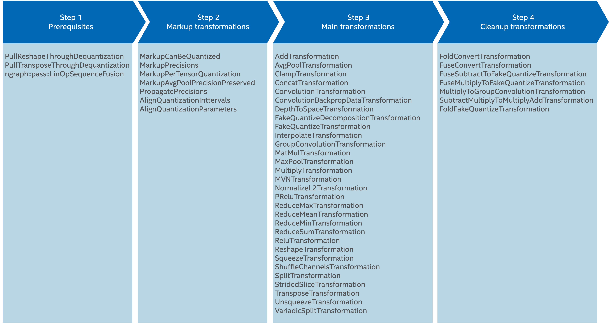

OpenVINO™ Low Precision Transformations¶
Introduction¶
Low precision transformations (known as LPT) are a set of nGraph transformations, which are combined in one library. The library is mandatory part of OpenVINO to infer quantized model in low precision with the maximum performance on Intel CPU, GPU and ARM platforms. The library includes more than 45 transformations and supports more then 30 operations. Some transformations are mandatory, some of them are optional and developed for specific device.
The goal of Low Precision Transformations (LPT) is to transform a quantized model from its original precision (FP16 or FP32) to a low precision (INT8: signed int8 or unsigned int8), so that it is prepared for low precision inference in OpenVINO™ plugin. It is achieved by two main principles:
FakeQuantizeoperation decomposition to two parts:part #1: quantize operation - new
FakeQuantizeoperation with output quantization intervals in low precision range (signed int8: [-128, 127] or [-127, 127], unsigned int8: [0, 255] or [0, 256]) and with low precision output (signed int8orunsigned int8),part #2: dequantization operations with low precision input and original precision output.
Propagation of the dequantization operation through original model’s operations. It is done to avoid dequantization operations before original model operations, thus the quantize operations with low precision output remain before the original model operations.
As result, operation input tensor precisions will be changed from original to low precision and operations can be inferred by OpenVINO™ plugin in low precision.
For a more detailed description on how to quantize a model, see the Low precision tools section below. For more information about model quantization, refer to Brief History of Lower Precision in Deep Learning section in this whitepaper.
Input model requirements¶
LPT transformations propagate dequantization operations through the following operations:
If operation is not supported by LPT then dequantization operation will not be propagated, input tensor precisions will not be changed to low precision and operation will be executed in original precision.
For example, if you would like to infer a model with Convolution operation in low precision then the model can look as on picture below:

There are several supported quantization approaches on activations and on weights. All supported approaches are described in Quantization approaches section below. In demonstrated model FakeQuantize operation quantization approach is used.
Low precision tools¶
For more details on how to get a quantized model, refer to Model Optimization document.
Quantization approaches¶
LPT transformations support two quantization approaches:
FakeQuantizeoperation,Quantize and dequantization operations
Let’s explore both approaches in details on Convolution operation.
FakeQuantize operation¶
In this case FakeQuantize operation is used on activations and quantized constant on weights. Original input model:
Quantize and dequantization operations¶
In this case FakeQuantize operation and Convert are used as quantize operation and return quantized low precision tensor. After quantize operation on activations there are Convert and dequantization operations to compensate decomposition. Original input model:
In both cases result is the same. In LPT result model you can see, that:
if necessary,
FakeQuantizeoperations on activations were decomposed to two part:new
FakeQuantizeoperation with updated output intervals in low precision range and low precision output,dequantization operations on activations;
if necessary, an existing
FakeQuantizedecomposition can be reworked to get better precision;dequantization operations were propagated through
Convolution.
LPT result model:

Low precision transformations pipeline¶
LPT transformation pipeline has several steps. For each transformation inside one step pattern matcher is unique per transformation, but each operation can be assigned to several transformations.
Inside each step LPT transformations handle input model operation by operation, applying transformation matching pattern for each transformation from the step to an operation, and execute transformation if pattern is matched. Decomposition transformation decomposes FakeQuantize to quantize and dequantization operations. Dequantization operations from previous transformation result is used for the current one and so on, until the end of the model is achieved.
As result, usually all operations are inferred by plugin in low precision. If plugin doesn’t support an operation inference in low precision, then corresponding LPT transformation can be disabled, and input tensor precisions for the operation will not be changed. In this case the operation is inferred in the original precision.
Low precision transformations pipeline includes four steps:
Step 1. Prerequisites¶
This step fuses and propagates some operations in the model to prepare for the next step. It is required for OpenVINO plugins. Transformations:
The model on this step is changed. There are more details in developer guide Prerequisites transformations.
Step 2. Markup¶
This step creates runtime attributes for operations. These attributes will be used in next step. Transformations:
The model on this step is changed: only new attributes are added to some operations. There are more details in developer guide Markup transformations.
Step 3. Main transformations, FakeQuantize decomposition and dequantization operations handling¶
This step has the most transformations. These transformations can be separated in two groups: decomposition transformation and dequantization operations handling. There are more details in developer guide Main transformations. Transformations:
Decomposition transformations¶
Decomposition transformations decompose the FakeQuantize operation to: quantize (FakeQuantize with low precision output) and dequantization operations (opposite to quantize, with low precision input and the original precision output). For dequantization operations LPT uses three operations: Convert, Subtract and Multiply. Element-wise operations Subtract and Multiply have constants on the second branches. If dequantization operations are not handled at the end of LPT pipeline, then they will be fused back to the FakeQuantize.
Original FakeQuantize :

FakeQuantize after decomposition to quantization and dequantization operations:
Dequantization operations handling transformations¶
In this step, LPT transformations fuse dequantization operations or move them through existing model operations as much as possible.
Original Convolution operation in FP32 with dequantization operations before:
Convolution operation in INT8 after decomposition and dequantization operations handling:
Step 4: Cleanup of the result model¶
LPT cleanup transformations is final stage in LPT pipeline. In this step LPT transformations clean up the result model to avoid not handled dequantization operations: fuse dequantization operations if possible (fuse at least Convert operations if not) to other model operations to cleanup result model. Transformations:
There are more details in developer guide Cleanup transformations.
FakeQuantize operation with not handled dequantization operations:
FakeQuantize operation with fused dequantization operations:
Low precision transformations in plugin transformation pipeline¶
Typical transformation pipeline described below.
Step 1. Common optimizations¶
This step is optional for LPT but typically is presented in OpenVINO™ plugins. The step doesn’t use any LPT transformation. Firstly, the step disables dequantization operations constant folding on constant subgraph on weights to prevent the lost of dequantization info on the next plugin transformations. After that, it optimizes nGraph function and convert operations to operation set 1. Typically, usage of this step is the simplest way to meet LPT requirements for the input quantized model. If plugin can guarantee that LPT input requirements are met, then this step can be skipped.
// check if the function is quantized to ignore LPT transformations for not quantized function to speed up model loading
const bool useLpt = ngraph::pass::low_precision::LowPrecision::isFunctionQuantized(nGraphFunc);
auto defaultPrecisions =
useLpt ? ngraph::pass::low_precision::precision_set::int8_support : std::vector<ov::element::Type>{};
if (useLpt) {
// disable constant folding on constant subgraph to use the subgraph for LPT
manager.register_pass<ngraph::pass::DisableConvertConstantFoldingOnConstPath>(defaultPrecisions);
}
// nGraph common transformations happen here
if (useLpt) {
// convert subtract constant to INT8 to prevent unnecessary FP16 to FP32 conversion
manager.register_pass<ngraph::pass::low_precision::ConvertSubtractConstant>(defaultPrecisions);
}
// nGraph common transformations happen here
if (useLpt) {
// convert not supported cases FakeQuantize -> Convert -> Convert -> Subtract -> Multiply to a single FakeQuantize
pass_config->set_callback<ngraph::pass::ConvertQuantizeDequantize>([&defaultPrecisions](const std::shared_ptr<const ngraph::Node> &node) -> bool {
return ngraph::pass::low_precision::NetworkHelper::areQuantizeAndDequantizeSupportedForMultiply(node, defaultPrecisions);
});
// convert not supported cases FakeQuantize -> Convert -> Convert -> Subtract -> Multiply to a single FakeQuantize
pass_config->set_callback<ngraph::pass::ConvertSubtract>([&defaultPrecisions](const std::shared_ptr<const ngraph::Node> &node) -> bool {
return ngraph::pass::low_precision::NetworkHelper::areQuantizeAndDequantizeSupportedForSubtract(node, defaultPrecisions);
});
}
manager.run_passes(nGraphFunc);Step 2. Low precision transformations execution¶
This step is mandatory. It configures and runs LPT transformations.
using namespace ngraph::pass::low_precision;
if (useLpt) {
// Low precision transformations plugin specific configuration: restrictions definition
auto supportedPrecisions = std::vector<PrecisionsRestriction>({
PrecisionsRestriction::create<ngraph::opset1::Convolution>({
{0, {ngraph::element::u8}},
{1, {ngraph::element::i8}},
}),
PrecisionsRestriction::create<ngraph::opset1::ConvolutionBackpropData>({
{0, {ngraph::element::u8, ngraph::element::i8}},
{1, {ngraph::element::i8}}
}),
PrecisionsRestriction::create<ngraph::opset1::GroupConvolution>({
{0, {ngraph::element::u8}},
{1, {ngraph::element::i8}}
}),
PrecisionsRestriction::create<ngraph::opset1::Multiply>({
{0, {ngraph::element::u8}},
{1, {ngraph::element::i8}},
}),
});
// Low precision transformations plugin specific configuration: per-tensor quantization operations definition
auto perTensorQuantization = std::vector<QuantizationGranularityRestriction>({
QuantizationGranularityRestriction::create<ngraph::opset1::Convolution>({0}),
QuantizationGranularityRestriction::create<ngraph::opset1::ConvolutionBackpropData>({0})
});
// Low precision transformations instantiation and registration in pass manager
ngraph::pass::Manager lptManager;
lptManager.register_pass<ngraph::pass::low_precision::LowPrecision>(supportedPrecisions, perTensorQuantization);
// Low precision transformations plugin specific configuration: transformation callbacks definition
lptManager.get_pass_config()->set_callback<MarkupPrecisions>([](const std::shared_ptr<const ngraph::Node>& node) -> bool {
if (const auto multiply = std::dynamic_pointer_cast<const ngraph::opset1::Multiply>(node)) {
return !MultiplyToGroupConvolutionTransformation::canBeTransformedToGroupConvolution(multiply);
}
return false;
});
lptManager.get_pass_config()->set_callback<ConvolutionBackpropDataTransformation>([&defaultPrecisions](const std::shared_ptr<const ngraph::Node>& node) -> bool {
return LayerTransformation::isAsymmetricQuantization(node, defaultPrecisions) || WeightableLayerTransformation::isAsymmetricOnWeights(node);
});
lptManager.get_pass_config()->set_callback<MultiplyToGroupConvolutionTransformation>([](const std::shared_ptr<const ngraph::Node>& node) -> bool {
return MultiplyToGroupConvolutionTransformation::isDynamicOrScalar(node);
});
// Low precision transformations execution
lptManager.run_passes(nGraphFunc);
}Step 3. Plugin-specific transformations¶
This step is optional. It modifies the nGraph function to a device-specific operation set.
ngraph::pass::Manager deviceSpecificManager;
deviceSpecificManager.register_pass<ngraph::pass::device::ConvertOpSet1ToDeviceSpecific>();
deviceSpecificManager.run_passes(nGraphFunc);Result model overview¶
Let’s explore quantized TensorFlow* implementation of ResNet-50 model. Use Model Downloader tool to download the fp16 model from OpenVINO™ Toolkit - Open Model Zoo repository :
omz_downloader --name resnet-50-tf --precisions FP16-INT8After that you should quantize model by the Model Quantizer tool.
omz_quantizer --model_dir public/resnet-50-tf --dataset_dir <DATASET_DIR> --precisions=FP16-INT8Inference¶
The simplest way to infer the model and collect performance counters is Benchmark Application.
./benchmark_app -m resnet-50-tf.xml -d CPU -niter 1 -api sync -report_type average_counters -report_folder pc_report_dirIf you infer the model with the OpenVINO™ CPU plugin and collect performance counters, all operations (except last not quantized SoftMax) are executed in INT8 precision.
Results analysis¶
Result model depends on different factors:
The original model quantization possibility and quantization quality. For some models, some operations are not possible to be quantized by POT and NNCF tools. In this case
FakeQuantizeoperations are absent before these operations and they will be inferred in original precision.LPT customization and plugin supported operations. If plugin doesn’t support INT8 inference for some operation then corresponding LPT transformation should be disabled and the operation will be inferred in original precision.
Information about layer precision is stored in the performance counters that are available from the OpenVINO Runtime API. For example, the part of performance counters table for quantized TensorFlow* implementation of ResNet-50 model inference on CPU Plugin looks as follows:
layerName |
execStatus |
layerType |
execType |
realTime (ms) |
cpuTime (ms) |
|---|---|---|---|---|---|
resnet_model/batch_normalization_15/FusedBatchNorm/Add |
EXECUTED |
Convolution |
jit_avx512_1x1_I8 |
0.377 |
0.377 |
resnet_model/conv2d_16/Conv2D/fq_input_0 |
NOT_RUN |
FakeQuantize |
undef |
0 |
0 |
resnet_model/batch_normalization_16/FusedBatchNorm/Add |
EXECUTED |
Convolution |
jit_avx512_I8 |
0.499 |
0.499 |
resnet_model/conv2d_17/Conv2D/fq_input_0 |
NOT_RUN |
FakeQuantize |
undef |
0 |
0 |
resnet_model/batch_normalization_17/FusedBatchNorm/Add |
EXECUTED |
Convolution |
jit_avx512_1x1_I8 |
0.399 |
0.399 |
resnet_model/add_4/fq_input_0 |
NOT_RUN |
FakeQuantize |
undef |
0 |
0 |
resnet_model/add_4 |
NOT_RUN |
Eltwise |
undef |
0 |
0 |
resnet_model/add_5/fq_input_1 |
NOT_RUN |
FakeQuantize |
undef |
0 |
0 |
The execStatus column of the table includes possible values:
EXECUTED- layer was executed by standalone primitive,NOT_RUN- layer was not executed by standalone primitive or was fused with another operation and executed in another layer primitive.
The execType column of the table includes inference primitives with specific suffixes. The layers have the following marks:
Suffix
I8for layers that had 8-bit data type input and were computed in 8-bit precisionSuffix
FP32for layers computed in 32-bit precision
As result all operations (except not quantized SoftMax at the end of the model) in OpenVINO™ CPU plugin are inferred in low precision. Note, please, in the result model there are FakeQuantize operations in FP32 but the plugin responsibility is fuse these operations with previous operations. OpenVINO™ CPU plugin achieves maximum optimized inference for all operations by fusing INT8 Convolution with FP32 output with FakeQuantize operation with FP32 input and INT8 output. In this case OpenVINO™ CPU plugin uses INT8 and FP32 vectorized instructions but reports about one INT8 kernel usage for inference, which is the most optimized for this case.
Mixed precision¶
If LPT input model operation output has fp16 precision then dequantization computations still occurs in fp32 precision. This approach is used to avoid accuracy loss in fp16 arithmetic computations. The ultimate output of the dequantization operation will have the fp16 precision, as expected.
Customization¶
Low Precision Transformations can be customizable. Build-in customization options:
operation precision restrictions,
operation per tensor quantization restrictions,
update precisions,
dequantization precision.
Operation precision restrictions¶
This option defines precisions which allowed for the operation input ports. The option value is passed as input argument for LowPrecision constructor. For example:
auto supportedPrecisions = std::vector<PrecisionsRestriction>({
PrecisionsRestriction::create<ngraph::opset1::Convolution>({
{0, {ngraph::element::u8}},
{1, {ngraph::element::i8}},
}),
});
ngraph::pass::Manager lptManager;
lptManager.register_pass<ngraph::pass::low_precision::LowPrecision>(supportedPrecisions);
lptManager.run_passes(nGraphFunc);In provided example in result model Convolution operation inputs must have specific precisions: u8 (unsigned int8) precision on input 0 (on activations) and i8 (signed int8) precision on input 1 (on weights).
Operation per tensor quantization restrictions¶
This option defines if operation supports per-tensor quantization only. The option value is passed as input argument for LowPrecision constructor. For example:
using namespace ngraph::pass::low_precision;
const std::vector<PrecisionsRestriction> emptyRestrictions;
auto perTensorQuantization = std::vector<QuantizationGranularityRestriction>({
QuantizationGranularityRestriction::create<ngraph::opset1::Convolution>({0})
});
ngraph::pass::Manager lptManager;
lptManager.register_pass<ngraph::pass::low_precision::LowPrecision>(emptyRestrictions, perTensorQuantization);
lptManager.run_passes(nGraphFunc);In provided example in result model Convolution operations must have per-tensor quantization on input 0 (on activations).
Update precisions¶
This option defines if each LPT transformation updates precision or not. The option value is boolean and is passed as updatePrecisions member of LayerTransformation::Params which is input argument for LowPrecision constructor. All transformations are affected. If true then low precision transformations update precisions to low precision and doesn’t if false. Typically this option is used for plugin debugging.
Typical customization use cases¶
Plugin specific customization can be implemented via nGraph transformation callbacks. For example: asymmetric quantization support can be easily customizable via LayerTransformation::isAsymmetricQuantization and WeightableLayerTransformation::isAsymmetricOnWeights methods usage in callbacks. For example:
using namespace ngraph::pass::low_precision;
ngraph::pass::Manager lptManager;
lptManager.register_pass<ngraph::pass::low_precision::LowPrecision>();
lptManager.get_pass_config()->set_callback<ConvolutionBackpropDataTransformation>([&defaultPrecisions](const std::shared_ptr<const ngraph::Node>& node) -> bool {
return LayerTransformation::isAsymmetricQuantization(node, defaultPrecisions) || WeightableLayerTransformation::isAsymmetricOnWeights(node);
});
lptManager.run_passes(nGraphFunc);